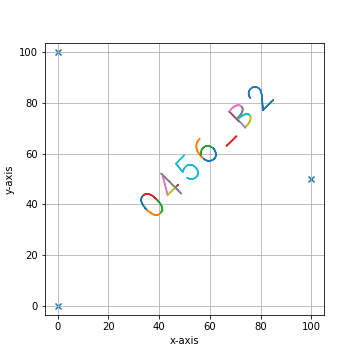

3. Modules
3.1. lmd.lib
3.1.1. Collection
- class lmd.lib.Collection(calibration_points: Optional[numpy.ndarray] = None)
Class which is used for creating shape collections for the Leica LMD6 & 7. Contains a coordinate system defined by calibration points and a collection of various shapes.
- Parameters
calibration_points – Calibration coordinates in the form of \((3, 2)\).
- calibration_points
Calibration coordinates in the form of \((3, 2)\).
- Type
Optional[np.ndarray]
- orientation_transform
defines transformations performed on the provided coordinate system prior to export as XML. This orientation_transform is always applied to shapes when there is no individual orienation_transform provided.
- Type
np.ndarray
- add_shape(shape: lmd.lib.Shape)
Add a new shape to the collection.
- Parameters
shape – Shape which should be added.
- join(collection: lmd.lib.Collection)
Join the collection with the shapes of a different collection. The calibration markers of the current collection are kept. Please keep in mind that coordinate systems and calibration points must be compatible for correct joining of collections.
- Parameters
collection – Collection which should be joined with the current collection object.
- Returns
returns self
- load(file_location: str)
Can be used to load a shape file from XML. Both, XMLs generated with py-lmd and the Leica software can be used. :param file_location: File path pointing to the XML file.
- new_shape(points: numpy.ndarray, well: Optional[str] = None, name: Optional[str] = None)
Directly create a new Shape in the current collection.
- Parameters
points – Array or list of lists in the shape of (N,2). Contains the points of the polygon forming a shape.
well – Well in which to sort the shape after cutting. For example A1, A2 or B3.
name – Name of the shape.
- plot(calibration: bool = True, mode: str = 'line', fig_size: tuple = (5, 5), apply_orientation_transform: bool = True, apply_scale: bool = False, save_name: Optional[str] = None)
This function can be used to plot all shapes of the corresponding shape collection.
- Parameters
calibration – Controls wether the calibration points should be plotted as crosshairs. Deactivating the crosshairs will result in the size of the canvas adapting to the shapes. Can be especially usefull for small shapes or debugging.
fig_size – Defaults to \((10, 10)\) Controls the size of the matplotlib figure. See matplotlib documentation for more information.
apply_orientation_transform – Define wether the orientation transform should be applied before plotting.
(Optional[str] (save_name) – None): Specify a filename for saving the generated figure. By default None is provided which will not save a figure.
default – None): Specify a filename for saving the generated figure. By default None is provided which will not save a figure.
- save(file_location: str, encoding: str = 'utf-8')
Can be used to save the shape collection as XML file.
file_location: File path pointing to the XML file.
- stats()
Print statistics about the Collection in the form of:
===== Collection Stats ===== Number of shapes: 208 Number of vertices: 126,812 ============================ Mean vertices: 609.67 Min vertices: 220.00 5% percentile vertices: 380.20 Median vertices: 594.00 95% percentile vertices: 893.20 Max vertices: 1,300.00
- svg_to_lmd(file_location, offset=[0, 0], divisor=3, multiplier=60, rotation_matrix=numpy.eye, orientation_transform=None)
Can be used to save the shape collection as XML file.
- Parameters
file_location – File path pointing to the SVG file.
orientation_transform – Will superseed the global transform of the Collection.
rotation_matrix –
3.1.2. Shape
- class lmd.lib.Shape(points: numpy.ndarray, well: Optional[str] = None, name: Optional[str] = None, orientation_transform=None)
Class for creating a single shape object.
- from_xml(root)
Load a shape from an XML shape node. Used internally for reading LMD generated XML files.
- Parameters
root – XML input node.
- to_xml(id: int, orientation_transform: numpy.ndarray, scale: int)
Generate XML shape node needed internally for export.
- Parameters
id – Sequential identifier of the shape as used in the LMD XML format.
orientation_transform (np.array) – Pass orientation_transform which is used if no local orientation transform is set.
scale (int) – Scalling factor used to enable higher decimal precision.
Note
If the Shape has a custom orientation_transform defined, the custom orientation_transform is applied at this point. If not, the oritenation_transform passed by the parent Collection is used. This highlights an important difference between the Shape and Collection class. The Collection will always has an orientation transform defined and will use np.eye(2) by default. The Shape object can have a orientation_transform but can also be set to None to use the Collection value.
3.1.3. SegmentationLoader
- class lmd.lib.SegmentationLoader(config={}, verbose=False)
Select single cells from a segmentation and generate cutting data
- Parameters
config (dict) – Dict containing configuration parameters. See Note for further explanation.
cell_sets (list(dict)) – List of dictionaries containing the sets of cells which should be sorted into a single well.
calibration_marker (np.array) – Array of size ‘(3,2)’ containing the calibration marker coordinates in the ‘(row, column)’ format.
Example
import numpy as np from PIL import Image from lmd.lib import SegmentationLoader im = Image.open('segmentation_cytosol.tiff') segmentation = np.array(im).astype(np.uint32) all_classes = np.unique(segmentation) cell_sets = [{"classes": all_classes, "well": "A1"}] calibration_points = np.array([[0,0],[0,1000],[1000,1000]]) loader_config = { 'orientation_transform': np.array([[0, -1],[1, 0]]) } sl = SegmentationLoader(config = loader_config) shape_collection = sl(segmentation, cell_sets, calibration_points) shape_collection.plot(fig_size = (10, 10))

Note
Basic explanation of the parameters in the config dict:
# dilation of the cutting mask in pixel before intersecting shapes in a selection group are merged shape_dilation: 0 # erosion of the cutting mask in pixel before intersecting shapes in a selection group are merged shape_erosion: 0 # Cutting masks are transformed by binary dilation and erosion binary_smoothing: 3 # number of datapoints which are averaged for smoothing # the resoltion of datapoints is twice as high as the resolution of pixel convolution_smoothing: 15 # fold reduction of datapoints for compression poly_compression_factor: 30 # Optimization of the cutting path inbetween shapes # optimized paths improve the cutting time and the microscopes focus # valid options are ["none", "hilbert", "greedy"] path_optimization: "hilbert" # Paramter required for hilbert curve based path optimization. # Defines the order of the hilbert curve used, which needs to be tuned with the total cutting area. # For areas of 1 x 1 mm we recommend at least p = 4, for whole slides we recommend p = 7. hilbert_p: 7 # Parameter required for greedy path optimization. # Instead of a global distance matrix, the k nearest neighbours are approximated. # The optimization problem is then greedily solved for the known set of nearest neighbours until the first set of neighbours is exhausted. # Established edges are then removed and the nearest neighbour approximation is recursivly repeated. greedy_k: 20 # Overlapping shapes are merged based on a nearest neighbour heuristic. # All selected shapes closer than distance_heuristic pixel are checked for overlap. distance_heuristic: 300
- check_cell_set_sanity(cell_set)
Check if cell_set dictionary contains the right keys
- load_classes(cell_set)
Identify cell class definition and load classes
Identify if cell classes are provided as list of integers or as path pointing to a csv file. Depending on the type of the cell set, the classes are loaded and returned for selection.
3.2. lmd.tools
- lmd.tools.ellipse(major_axis, minor_axis, offset=(0, 0), rotation=0, polygon_resolution=1)
Get a lmd.lib.Shape for ellipse of choosen dimensions.
- Parameters
major_axis (float) – Major axis of the ellipse. The major axis is defined from the center to the perimeter and therefore half the diameter. The major axis is placed along the x-axis before rotation.
minor_axis (float) – Minor axis of the ellipse. The minor axis is defined from the center to the perimeter and therefore half the diameter. The minor axis is placed along the y-axis before rotation.
offset (np.ndarray) – Location of the ellipse based on the center given in the form of (x, y). Default value: np.array((0, 0))
rotation (float) – Clockwise rotation in radian.
polygon_resolution (float) – The polygon resolution defines how far the vertices should be spaced on average. A polygon_resolution of 10 will place a vertex on average every ten units.
- Returns
Shape which contains the ellipse.
- Return type
Example
import numpy as np from lmd.lib import Collection, Shape from lmd import tools calibration = np.array([[0, 0], [0, 100], [50, 50]]) my_first_collection = Collection(calibration_points = calibration) my_ellipse = tools.ellipse(20, 10, offset = (30, 50), polygon_resolution = 5, rotation = 1.8*np.pi) my_first_collection.add_shape(my_ellipse) my_first_collection.plot(calibration = True)
{kind=link}
- lmd.tools.get_rotation_matrix(angle: float)
Returns a rotation matrix for clockwise rotation.
- Parameters
angle (float) – Rotation in radian.
- Returns
Matrix in the shape of (2, 2).
- Return type
np.ndarray
- lmd.tools.glyph(glyph, offset=numpy.array, rotation=0, divisor=10, multiplier=1, **kwargs)
Get an uncalibrated lmd.lib.Collection for a glyph of interest.
- Parameters
glyph (str) – Single glyph as string.
divisor (int) – Parameter which determines the resolution when creating a polygon from a SVG. A larger divisor will lead to fewer datapoints for the glyph. Default value: 10
offset (np.ndarray) – Location of the glyph based on the top left corner. Default value: np.array((0, 0))
multiplier (float) – Scaling parameter for defining the size of the glyph. The default height of a glyph is 10 units. Default value: 1
- Returns
Uncalibrated Collection which contains the Shapes for the glyph.
- Return type
- lmd.tools.glyph_path(glyph)
Returns the path for a glyph of interest. Raises a NotImplementedError if an unknown glyph is requested.
- Parameters
glyph (str) – Single glyph as string.
- Returns
Path for the glyph.
- Return type
str
- lmd.tools.rectangle(width, height, offset=(0, 0), rotation=0, rotation_offset=(0, 0))
Get a lmd.lib.Shape for rectangle of choosen dimensions.
- Parameters
width (float) – Width of the rectangle.
offset (np.ndarray) – Location of the rectangle based on the center. Default value: np.array((0, 0))
rotation (float) – Rotation in radian.
rotation_offset (np.ndarray) – Location of the center of rotation relative to the center of the rectangle. Default value: np.array((0, 0))
- Returns
Shape which contains the rectangle.
- Return type
Example:
- lmd.tools.text(text, offset=numpy.array, divisor=1, multiplier=1, rotation=0, **kwargs)
Get an uncalibrated lmd.lib.Collection for a text.
- Parameters
text (str) – Text as string.
divisor (int) – Parameter which determines the resolution when creating a polygon from a SVG. A larger divisor will lead to fewer datapoints for the glyph. Default value: 10
offset (np.ndarray) – Location of the text based on the top left corner. Default value: np.array((0, 0))
multiplier (float) – Scaling parameter for defining the size of the text. The default height of a glyph is 10 units. Default value: 1
- Returns
Uncalibrated Collection which contains the Shapes for the text.
- Return type
Example
import numpy as np from lmd.lib import Collection, Shape from lmd import tools calibration = np.array([[0, 0], [0, 100], [100, 50]]) my_first_collection = Collection(calibration_points = calibration) identifier_1 = tools.text('0456_B2', offset=np.array([30, 40]), rotation = -np.pi/4) my_first_collection.join(identifier_1) my_first_collection.plot(calibration = True)
{kind=link}